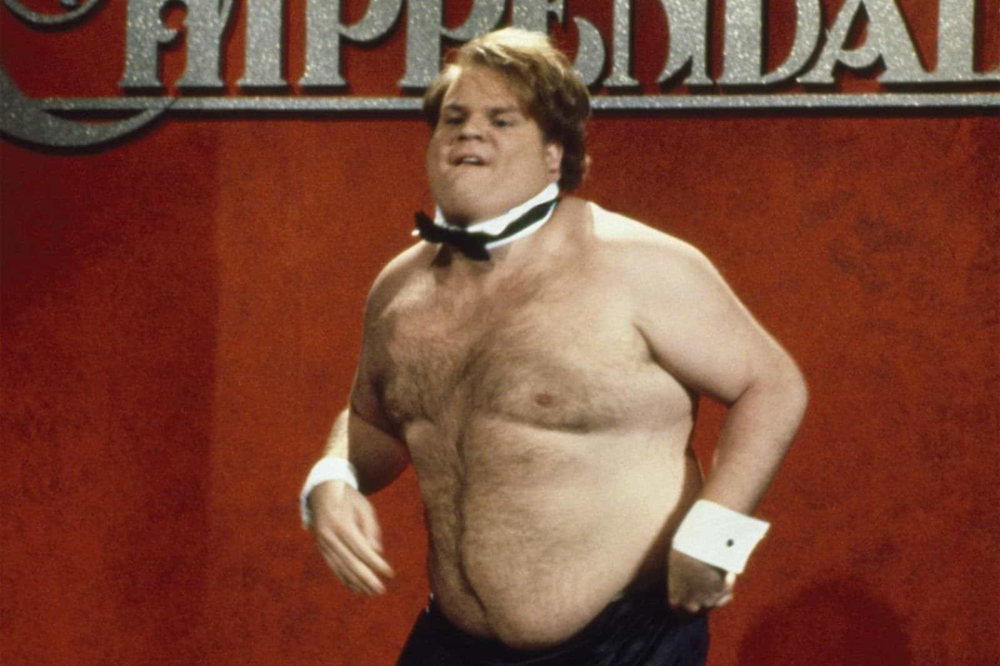
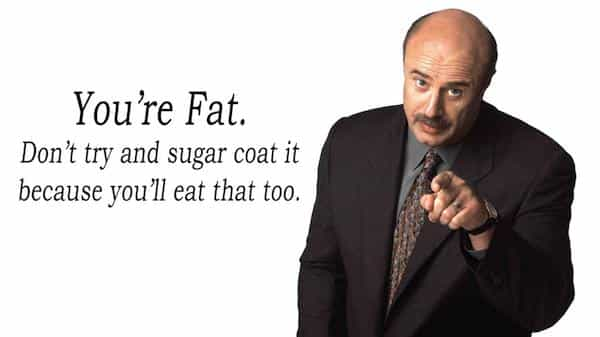

It’s a no brainer that being obese versus being physically fit and attractive is a no-contest comparison. Speaking from experience on both sides, it’s one thing to hear it and it’s another thing to step out of one world and into another.
The people around you will change their opinion of you and see you as a different person, thus altering your environment and opportunities, for better and for worse.
I came from a very broken home which has caused me to be massively overweight throughout my junior and high school career, weighing over 350 pounds. You could imagine how damaged I was mentally and I had no relationships with the opposite sex or my peers.
It did not matter how much game and effort I could put into girls; the best I could ever hope to accomplish were other ham beasts like myself. This was a problem that was preventing me from living life.
The Plight Of Being Obese
I spent the most of my entire high school career in a shell and satisfied myself with video games, chat rooms, and pornography, until finally, in the beginning of my senior year, I had a mental breakdown that I desperately needed.

The only friends I had to speak of made fun of me, I had no relationships with girls, and I didn’t care enough to earn good grades. The only time I would get attention from people was by acting out and doing Chris Farley impressions in class (although he was a better dancer).
Obesity infects the mind; you will avoid eye contact, have absolutely no ambition, and contemplate suicide. People will only be nice to you out of pity and will not show you any respect. And how can you blame them? It is the manifestation of the slave mentality that Nietzsche has spoken about. Look at all the fat feminists and obese beta males orbiting them.
The only way to solve this problem is to have a mental breakdown and to blame yourself. The weight is on you, even if your single mother did nothing about the problem. Blaming others never solved anything and you revoke the power to fix the issue.
The Day-To-Day Problems Of Obesity
Gaining weight isn’t a sudden thing. As days roll into months and years, you don’t really see the immediate effects of the problem building up. It is really only when you get to an alarming point that the excess fat begins to noticeably tax your body.
Simple things like going up the stairs and walking are now difficult. When you are only twenty pounds overweight, it’s not nearly as noticeable as when you’re carrying 50 or 60 pounds. You could imagine what the difficulty is like carrying an extra 100 to 150 pounds.
Being super overweight caused me to grow up as a shut-in, as I mentioned earlier. The biggest problem with being obese is how it affected my body language when I spoke to people. I had bad posture, spoke softly, and stared at the floor to avoid eye contact.
Whenever I did something wrong, I would never own up to it. Instead I would lie and shift blame onto something else.
Obesity did more than damage my health or appearance: it was corrosive and toxic to my character. And the foods I was eating made me think very cloudy and zombie-like.
Things like knee and back pain are a permanent reality when you are that size. When I see obese people using those shopping scooters, I can understand why they would use them, even though I didn’t. Your body is in constant pain when you’re obese, especially when you’re older.
Now when I see the people who use those scooters to fill their basket with pizza and ice cream, I have no empathy for them when they prematurely die of a heart attack for not acting on the red flags (such as needing a motorized scooter to get around).
The Mental Process Of Changing
Sooner or later, something has to give. If you listen to some people who lost a lot of weight, they speak about suicidal thoughts running through their mind. This is something that I can absolutely confirm. Life eventually becomes so unbearable that you arrive at a crossroads.
Any roadblock that is put in front of you, such as how a particular diet may be dangerous, or working out for too long may kill you because your body is out of shape, all of it goes out the window because you are already dead on the inside.
At that point, you have nothing to lose, so you might as well risk everything. That is where you suddenly find the will to power. It is a completely different state of mind, very dark and cornered.
Either end the pain right now, continue being obese and die in ten years, or lose weight. That is reality and those are the only options.
Why Fat Shaming Is Good

Not to get too far off topic, but this is something that needed to be addressed, coming from a guy who used to be obese and has had more than a fair share of fat shaming. Being fat-shamed absolutely helped me, personally. When you have a huge problem, you tend to tune it out and to try and forget about it, but the people who fat-shamed me didn’t let me escape reality.
Being constantly told I was fat did not let me become comfortable with being overweight. Fat-shaming is having somebody get in your face and point their finger right at you and say, “You have a problem.” And as soon as I dropped the weight, guess what happened? No more fat-shaming. The people who did all the fat-shaming had nothing else to say but congratulations.
Even though some fat-shaming comments can be nefarious and has somewhat of a bullying tone to them, it simply does not matter. The more it cuts into you, the more you understand this problem is eating at you. On the flip side, I have had people (mostly older females) who came at me in a more concerned and compassionate tone. It never worked.
Being nice and understanding is just a way to dance around the seriousness of the problem. It does not put you in that dark mental process that I mentioned earlier.
When you come down hard on a person for their problems, and they have a panicked look on their face, that is what you want. You want to put them in a position where it is do or die.
After The Weight Loss
Not having a lot of friends or a girlfriend granted me something valuable: time. I spent countless hours reading forums, asking people in chat rooms, watching YouTube videos on what to do. I used my body to test out over countless diets, from intermittent fasting, keto diet, carb cycling, etc.
I lost my first 60 pounds with just nutrition alone and counting calories until I hit a plateau. I had to up my game and started to run up and down my home stairs for 30-45 minutes every day. After a year, I shrunk down to 220 pounds. Everybody looked at me differently. The box that they put me in was no longer holding up.
Not only was I more physically capable of doing things, my mental acuity was also growing and I desired more out of my body, but I wasn’t sure on what to do or had a vision in mind.
I decided to go out to the movie theater by myself to watch the new Captain America (my favorite Marvel character) film. The scene at which he stepped out the chamber and was jacked blew me away. When one of the female characters went up and tried to touch his muscular chest, my vision became clear. I want that.
And with that, as a broke college student, my grandparents gave me enough money for a year at my local YMCA. I began reading bodybuilding forums, articles, tried different workout routines to grow my muscles. The more muscle tissue I packed on, the more fat burnt off.
Months went by and women were giving me more attention. I was no longer self-conscious about my weight and started hitting clubs and parties. Eventually, I lost my virginity to some random girl at a frat party (no shame, no game).
If there is one take-home message I want to give out, it is that amazing things take time and hard work does pay off. It’s a cliche, but it’s true. Defer your gratification.
Read More: More Americans Are Now Obese Than Overweight